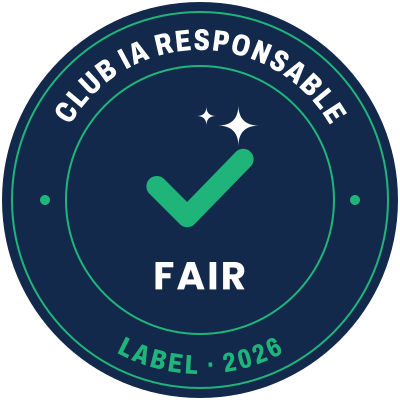

Le label Club IA responsable
Dernière mise à jour : 21 octobre 2026

Le label reconnaît les clubs sportifs qui ont formé leurs bénévoles avec FAIR et adopté une charte pour encadrer leur usage de l'intelligence artificielle. Il est gratuit et ouvert à tous les sports.
Le label sera délivré dès que l'association FAIR sera déclarée en préfecture et que son conseil d'administration aura adopté le règlement ci-dessous. D'ici là, ce règlement est publié à l'état de projet.
Ce que garantit le label
Il atteste que le club
- a formé au moins deux bénévoles avec FAIR
- a désigné un référent IA
- a voté une charte IA en assemblée générale ou en conseil d'administration
- s'est engagé à relire tout contenu produit par l'IA et à protéger les données de ses adhérents
Il n'atteste pas
- la conformité au RGPD ou au règlement européen sur l'IA
- la qualité des contenus produits par le club
- la qualité d'un outil ou d'un service d'IA
- un agrément d'une autorité publique ou d'une fédération
Le label n'est pas une certification. Il est délivré par FAIR seule, pour deux saisons sportives.
Comment l'obtenir
- Suivre le parcours FAIR. Au moins deux membres du bureau ou bénévoles suivent le niveau 0 de la formation, dont un atelier animé par FAIR.
- Adopter une charte IA. Le club la fait voter en assemblée générale ou en conseil d'administration. Le module 3 de la formation fournit un modèle.
- Envoyer la demande. Le référent IA écrit à contact@fairassociation.fr avec les attestations, la charte, l'extrait du procès-verbal du vote et le formulaire d'engagement signé.
- Recevoir la décision. Le bureau de FAIR répond sous 30 jours. En cas d'accord, le club reçoit le logo et une attestation d'attribution.
Les clubs labellisés
Cette liste fait foi : un club qui affiche le label sans y figurer ne l'a pas reçu, ou ne l'a plus. Pour signaler un usage abusif, écrivez à contact@fairassociation.fr.
| Club | Ville | Discipline | Valable jusqu'au |
|---|---|---|---|
| Aucun club labellisé pour l'instant. Les premiers labels seront attribués après l'adoption du règlement. | |||
Règlement d'usage
Projet · version du 21 octobre 2026
- 1. Objet et titulaire du label
- 2. Signification et portée
- 3. Bénéficiaires
- 4. Critères d'attribution
- 5. Procédure et vérification
- 6. Validité et renouvellement
- 7. Gratuité
- 8. Utilisation du nom et du logo
- 9. Engagements du club
- 10. Contrôle, suspension et retrait
- 11. Recours
- 12. Liste publique et données
- 13. Responsabilité
- 14. Modification et entrée en vigueur
- Annexe. Formulaire d'engagement
Article 1 – Objet et titulaire du label
Le présent règlement fixe les conditions d'attribution et d'utilisation du label « Club IA responsable » (ci-après « le label »).
Le label est créé et géré par l'association FAIR – Former les Associations à l'IA Responsable, association loi 1901 en cours de déclaration (ci-après « FAIR »).
Le nom et le logo du label sont la propriété de FAIR, qui en prépare le dépôt de marque à l'INPI. Les clubs labellisés reçoivent un droit d'usage gratuit, non exclusif et incessible, dans les limites du présent règlement.
Article 2 – Signification et portée du label
Le label atteste qu'à la date de son attribution, le club :
- a suivi le parcours de formation FAIR défini à l'article 4 ;
- a adopté une charte d'usage de l'intelligence artificielle ;
- s'est engagé à respecter les règles d'usage responsable décrites à l'article 9.
Le label n'atteste pas :
- que le club respecte le règlement général sur la protection des données (RGPD), le règlement européen sur l'IA ou toute autre obligation légale ;
- la qualité ou l'exactitude des contenus que le club produit avec l'IA ;
- la qualité d'outils ou de services d'IA, quels qu'ils soient.
Le label n'est pas une certification au sens du Code de la consommation. Il est délivré par FAIR seule, sans agrément ni soutien d'une autorité publique, d'une fédération sportive ou de la CNIL, sauf accord écrit mentionné sur le site de FAIR.
Article 3 – Bénéficiaires
Peut demander le label toute association sportive à but non lucratif déclarée en France (club, section omnisports, comité local), quelle que soit sa discipline.
Le label est attribué à l'association, et non à ses dirigeants ou bénévoles. Les bénévoles formés reçoivent une attestation individuelle de formation, distincte du label.
Article 4 – Critères d'attribution
Le label est attribué au club qui remplit les quatre critères suivants :
- Formation. Au moins deux membres du bureau ou bénévoles ont suivi le parcours FAIR, niveau 0 « Premiers pas » (modules 1 à 5), dont au moins un atelier animé par FAIR.
- Référent IA. Le club désigne un référent IA parmi les personnes formées. Il est le contact de FAIR pour le label.
- Charte IA. Le club a adopté une charte d'usage de l'IA, par un vote de son assemblée générale ou de son conseil d'administration. Elle couvre au minimum : la protection des données des adhérents, le droit à l'image (en particulier des mineurs), la relecture humaine des contenus produits et la vigilance face aux arnaques.
- Engagement. Le président du club a signé le formulaire d'engagement figurant en annexe.
Article 5 – Procédure d'attribution et vérification
- Demande. Le référent IA envoie la demande à contact@fairassociation.fr avec les pièces suivantes : les attestations de formation, la charte IA adoptée, l'extrait du procès-verbal du vote et le formulaire d'engagement signé.
- Vérification. FAIR vérifie les pièces. Les attestations générées sur le site de FAIR sont déclaratives : FAIR les recoupe avec sa propre liste des participants aux ateliers. FAIR peut demander un échange avec le référent IA.
- Décision. Le bureau de FAIR décide dans un délai de 30 jours après réception du dossier complet. Un membre de FAIR qui est aussi membre du club demandeur ne participe pas à la décision.
- Notification. FAIR informe le club par écrit. En cas d'attribution, elle lui remet le logo, ce règlement et une attestation d'attribution datée. Un refus est motivé et indique ce qui manque.
Article 6 – Durée de validité et renouvellement
Le label est valable pour deux saisons sportives, jusqu'au 31 août de la dernière saison couverte. L'année d'attribution accompagne toujours le logo (exemple : « Club IA responsable 2026 »).
Pour le renouveler, le club envoie avant l'échéance :
- la charte IA, mise à jour si besoin ;
- le nom du référent IA en poste ;
- la preuve qu'au moins une personne formée est toujours active au club, ou qu'une nouvelle personne a suivi la formation.
Sans renouvellement, le club cesse d'utiliser le label à l'échéance.
Article 7 – Gratuité
L'examen du dossier, l'attribution, le renouvellement et l'usage du label sont gratuits pour les clubs. Le label ne peut être ni acheté, ni obtenu en contrepartie d'un don, d'une adhésion à FAIR ou de l'achat d'un produit ou d'un service.
Article 8 – Règles d'utilisation du nom et du logo
Le club labellisé peut utiliser le label sur ses supports de communication : site internet, réseaux sociaux, affiches, courriers, dossiers de subvention et club-house.
Il s'engage à :
- reproduire le logo fourni par FAIR sans le modifier (forme, couleurs, proportions), avec l'année d'attribution ;
- l'utiliser seulement pendant la durée de validité du label ;
- employer les formules « club labellisé Club IA responsable » ou « label FAIR Club IA responsable ».
Il est interdit :
- d'employer les mots « certifié », « certification », « agréé » ou « conforme RGPD » à propos du label ;
- d'apposer le label sur un produit vendu, ou de l'utiliser pour promouvoir un outil ou un service commercial ;
- de laisser croire que le label est délivré par une autorité publique ou une fédération ;
- de céder ou de prêter le label à une autre structure, même affiliée au club.
Article 9 – Engagements du club labellisé
Pendant toute la validité du label, le club s'engage à :
- appliquer sa charte IA et la tenir à disposition de ses adhérents ;
- faire relire par une personne tout contenu produit avec l'IA avant de le diffuser ;
- ne pas transmettre à un outil d'IA de données personnelles d'adhérents sans base légale ni précaution, en particulier les données de santé et celles des mineurs ;
- ne pas diffuser d'image d'un mineur, modifiée ou générée par l'IA, sans l'accord de ses représentants légaux ;
- informer FAIR de tout changement de référent IA dans un délai de deux mois ;
- répondre aux demandes d'information de FAIR prévues à l'article 10.
Article 10 – Contrôle, suspension et retrait
FAIR peut demander au club, à tout moment, des informations sur l'application de sa charte IA, par exemple lors du suivi à un mois après l'atelier. Toute personne peut signaler un usage abusif du label à contact@fairassociation.fr.
Si un manquement est constaté, FAIR envoie au club une mise en demeure écrite. Le club dispose de 30 jours pour présenter ses observations ou corriger la situation.
Sans réponse satisfaisante, le bureau de FAIR peut :
- suspendre le label pour trois mois au plus, le temps que le club corrige la situation ;
- retirer le label en cas de manquement grave ou répété, notamment un usage trompeur du label ou une atteinte aux droits d'un mineur.
En cas de suspension, de retrait ou de fin de validité, le club retire le logo de ses supports dans un délai de 30 jours. Un club dont le label a été retiré peut déposer une nouvelle demande après un an.
Article 11 – Recours
Un club peut contester un refus, une suspension ou un retrait dans un délai de 30 jours, par écrit et de façon motivée. Le recours est examiné par le conseil d'administration de FAIR, sans les membres qui ont pris la première décision. Le club peut être entendu. La décision lui est notifiée dans les 60 jours.
Cette procédure ne prive pas le club de son droit de saisir le tribunal compétent.
Article 12 – Liste publique et données personnelles
FAIR publie sur son site la liste des clubs labellisés : nom du club, ville, discipline et période de validité. Un club suspendu ou dont le label a été retiré n'apparaît plus sur cette liste.
FAIR traite les données des personnes citées dans les dossiers (référent IA, bénévoles formés, président) uniquement pour gérer le label. Elle les conserve pendant la durée du label, puis trois ans. Ces personnes peuvent exercer leurs droits auprès de contact@fairassociation.fr, dans les conditions décrites dans la politique de confidentialité. Aucune donnée personnelle n'est publiée sur la liste.
Article 13 – Responsabilité
Le club reste seul responsable de ses usages de l'IA, des contenus qu'il diffuse et du respect de ses obligations légales. L'attribution du label n'engage pas la responsabilité de FAIR pour ces usages.
Le club répond de tout usage du label contraire au présent règlement. FAIR se réserve le droit d'agir contre tout usage non autorisé du nom ou du logo, par un club ou par un tiers.
Article 14 – Modification et entrée en vigueur
Le présent règlement entrera en vigueur après son adoption par le conseil d'administration de FAIR. La date d'adoption sera indiquée sur cette page.
FAIR peut le modifier en suivant la même procédure. Les clubs labellisés sont informés par écrit au moins deux mois avant l'entrée en vigueur d'une modification. Les labels déjà attribués restent valables jusqu'à leur échéance, mais les nouvelles règles d'utilisation du logo s'appliquent à tous les clubs.
Annexe – Formulaire d'engagement du club
Le club joint à sa demande les informations suivantes : nom de l'association, numéro RNA ou SIRET, ville et discipline(s), président(e), référent IA (nom, e-mail), personnes formées et dates des ateliers, date d'adoption de la charte IA et instance qui l'a votée.
Puis le président ou la présidente signe la déclaration suivante :
Je soussigné(e), [nom], président(e) de l'association [nom du club], déclare avoir pris connaissance du règlement d'usage du label « Club IA responsable » et l'accepter, que les informations et pièces jointes à la demande sont exactes, et engager le club à respecter les articles 8 et 9 pendant toute la validité du label. Fait à [ville], le [date]. Signature.
Une question ?
Le label est réservé aux clubs qui ont suivi le parcours FAIR. Pour démarrer, demandez un atelier : c'est gratuit.